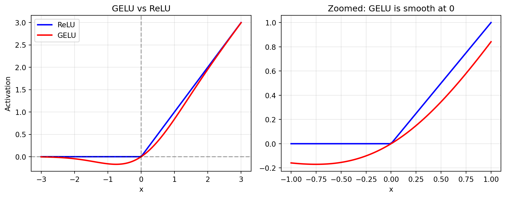
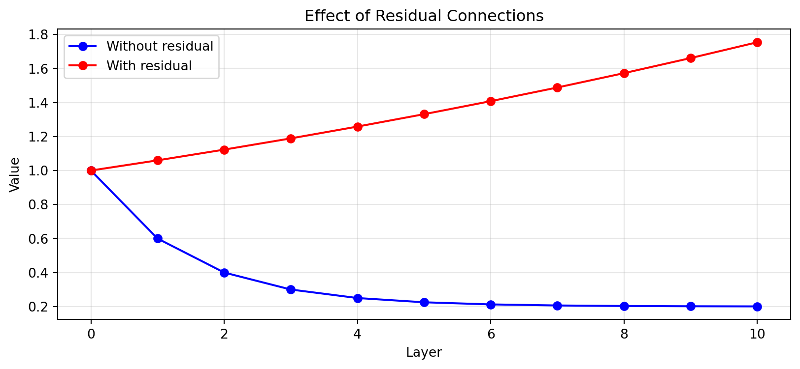
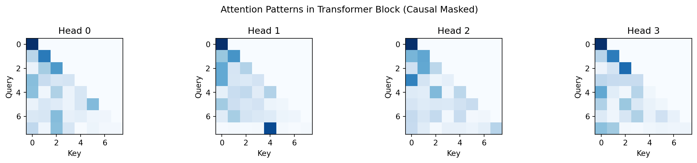
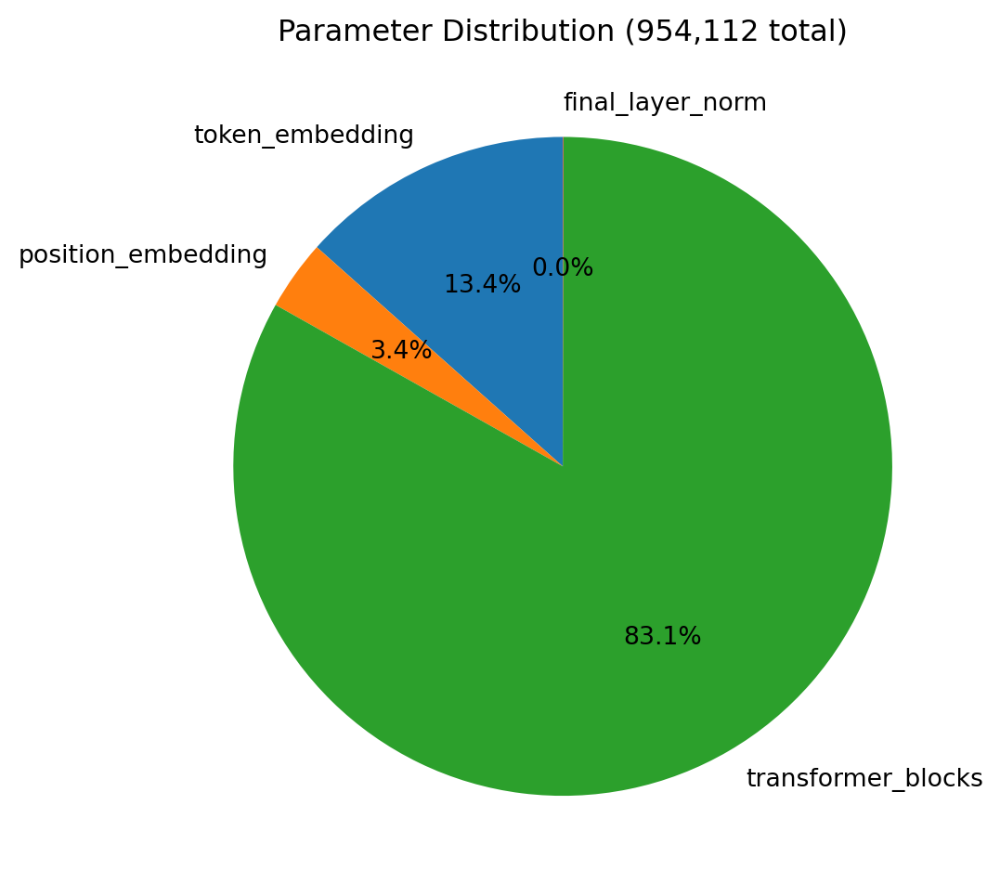
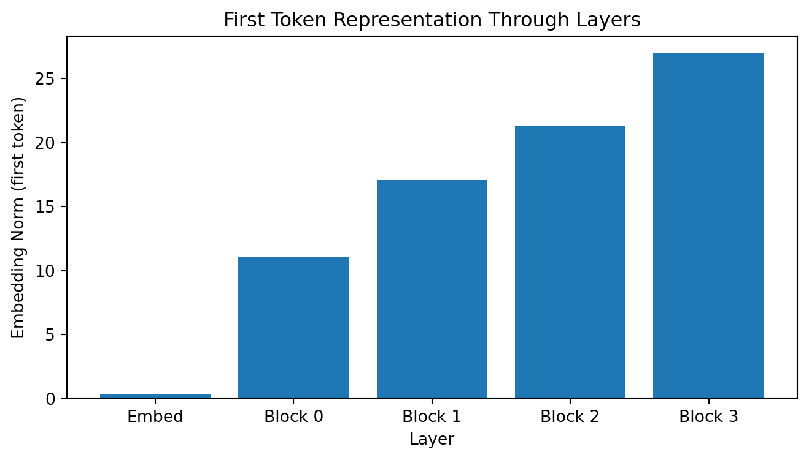

flowchart TB
subgraph input["Input"]
tokens["Token IDs<br/>[23, 156, 42, 789]"]
end
subgraph embed["Embeddings"]
tokemb["Token Embedding<br/>(vocab_size, embed_dim)"]
posemb["Position Embedding<br/>(max_seq_len, embed_dim)"]
add1["+ Add"]
end
subgraph blocks["Transformer Blocks (x N)"]
block1["Block 0"]
block2["Block 1"]
blockn["Block N"]
end
subgraph output["Output"]
lnfinal["Final LayerNorm"]
lmhead["LM Head<br/>(Linear to vocab_size)"]
logits["Logits<br/>[scores for each token]"]
end
tokens --> tokemb
tokens --> posemb
tokemb --> add1
posemb --> add1
add1 --> block1
block1 --> block2
block2 --> blockn
blockn --> lnfinal
lnfinal --> lmhead
lmhead --> logits
Module 06: Transformer
Introduction
The transformer decoder block is the building block of GPT-style language models. Stack 12-96 of these blocks, and you get models like GPT-2, GPT-3, or LLaMA.
In this module, we’ll combine everything we’ve built so far:
- Multi-head attention from Module 05
- Feed-forward networks (mini neural networks for each token)
- Layer normalization (stabilizes training)
- Residual connections (enables deep networks)
Each block performs two main operations:
- Multi-head attention: Tokens communicate with each other
- Feed-forward network: Each token is processed independently
Decoder-Only vs Encoder-Decoder
This module implements decoder-only transformers (GPT-style). There are two main transformer architectures:
| Architecture | Examples | Use Case | Attention |
|---|---|---|---|
| Decoder-only | GPT, LLaMA, Claude | Text generation | Causal (can’t see future) |
| Encoder-Decoder | T5, BART, original Transformer | Translation, summarization | Bidirectional encoder + causal decoder |
We focus on decoder-only because it’s simpler and powers most modern LLMs.
Complete Model Architecture
Single Transformer Block (Pre-Norm)
flowchart TB
input["Input x<br/>(batch, seq, embed)"]
subgraph attention_path["Attention Path"]
ln1["LayerNorm"]
attn["Multi-Head<br/>Attention<br/>(causal mask)"]
drop1["Dropout"]
end
add1(("+"))
subgraph ffn_path["FFN Path"]
ln2["LayerNorm"]
ffn["Feed-Forward<br/>Network"]
end
add2(("+"))
output["Output<br/>(batch, seq, embed)"]
input --> ln1
input --> add1
ln1 --> attn
attn --> drop1
drop1 --> add1
add1 --> ln2
add1 --> add2
ln2 --> ffn
ffn --> add2
add2 --> output
The key innovation is the residual connections (the + nodes). Instead of y = f(x), we compute y = x + f(x). This:
- Helps gradients flow through deep networks
- Makes it easy to learn identity (just set
f(x) = 0) - Enables training of 100+ layer networks
The Components
Layer Normalization
Normalizes activations across the embedding dimension:
\[\text{LayerNorm}(x) = \gamma \times \frac{x - \mu}{\sqrt{\sigma^2 + \epsilon}} + \beta\]
where \(\mu\) and \(\sigma^2\) are the mean and variance across the embedding dimension, and \(\gamma\), \(\beta\) are learnable parameters.
Why it helps:
- Stabilizes activations: Prevents values from exploding or vanishing
- Faster training: More stable gradients
- Independent per token: Each token normalized separately
Feed-Forward Network (FFN)
flowchart LR
input["Input<br/>(embed_dim)"]
linear1["Linear<br/>embed_dim -> 4x embed_dim"]
gelu["GELU<br/>Activation"]
linear2["Linear<br/>4x embed_dim -> embed_dim"]
output["Output<br/>(embed_dim)"]
input --> linear1 --> gelu --> linear2 --> output
The FFN is a mini neural network applied to each token independently:
- 4x expansion: More capacity to learn complex transformations
- GELU activation: Smoother than ReLU, better gradients
- Same for all tokens: Unlike attention, no mixing between positions
Pre-Norm vs Post-Norm
We use Pre-Norm (LayerNorm before attention/FFN) rather than Post-Norm:
# Pre-Norm (GPT-2, LLaMA, modern LLMs)
x = x + Attention(LayerNorm(x))
# Post-Norm (original Transformer paper)
x = LayerNorm(x + Attention(x))Why Pre-Norm is preferred:
- Cleaner gradient path: The residual connection bypasses normalization, so gradients flow directly
- More stable training: Especially important for deep networks (24+ layers)
- Requires final LayerNorm: Since the last block’s output isn’t normalized, we add a final LayerNorm before the output projection
Post-Norm can achieve slightly better final performance with careful hyperparameter tuning, but Pre-Norm is more robust and easier to train.
Code Walkthrough
Let’s build and explore transformer blocks:
import sys
import importlib.util
from pathlib import Path
import torch
import torch.nn as nn
import matplotlib.pyplot as plt
print(f"PyTorch version: {torch.__version__}")
device = "mps" if torch.backends.mps.is_available() else "cpu"
print(f"Device: {device}")PyTorch version: 2.9.1
Device: mpsGELU Activation
GPT uses GELU instead of ReLU. Let’s see why:
import torch.nn.functional as F
x = torch.linspace(-3, 3, 100)
gelu_out = F.gelu(x)
relu_out = torch.relu(x)
plt.figure(figsize=(10, 4))
plt.subplot(1, 2, 1)
plt.plot(x.numpy(), relu_out.numpy(), 'b-', label='ReLU', linewidth=2)
plt.plot(x.numpy(), gelu_out.numpy(), 'r-', label='GELU', linewidth=2)
plt.axhline(y=0, color='k', linestyle='--', alpha=0.3)
plt.axvline(x=0, color='k', linestyle='--', alpha=0.3)
plt.xlabel('x')
plt.ylabel('Activation')
plt.legend()
plt.title('GELU vs ReLU')
plt.grid(True, alpha=0.3)
plt.subplot(1, 2, 2)
x_zoom = torch.linspace(-1, 1, 100)
plt.plot(x_zoom.numpy(), torch.relu(x_zoom).numpy(), 'b-', label='ReLU', linewidth=2)
plt.plot(x_zoom.numpy(), F.gelu(x_zoom).numpy(), 'r-', label='GELU', linewidth=2)
plt.xlabel('x')
plt.title('Zoomed: GELU is smooth at 0')
plt.grid(True, alpha=0.3)
plt.tight_layout()
plt.show()
print("Key difference: GELU is smooth everywhere!")
print("ReLU has a sharp corner at x=0, which can cause gradient issues.")
Key difference: GELU is smooth everywhere!
ReLU has a sharp corner at x=0, which can cause gradient issues.GELU formula: \(\text{GELU}(x) = x \cdot \Phi(x)\) where \(\Phi\) is the standard normal CDF.
Approximation used in practice: \(0.5x(1 + \tanh(\sqrt{2/\pi}(x + 0.044715x^3)))\)
Activation function choices in modern LLMs:
| Model | Activation | Notes |
|---|---|---|
| GPT-2, BERT | GELU | Smooth, good gradients |
| LLaMA, Mistral | SwiGLU | Gated variant, better performance |
| GPT-3 | GELU | Same as GPT-2 |
SwiGLU (used in LLaMA) is a gated linear unit: \(\text{SwiGLU}(x) = \text{Swish}(xW_1) \otimes xW_2\). It requires an extra linear layer but often improves performance. Our implementation uses standard GELU to match GPT-2.
Layer Normalization Demo
# Manual LayerNorm demonstration
x = torch.tensor([[2.0, 4.0, 6.0, 8.0]])
mean = x.mean(dim=-1, keepdim=True)
var = x.var(dim=-1, unbiased=False, keepdim=True)
normalized = (x - mean) / torch.sqrt(var + 1e-5)
print("Manual LayerNorm:")
print(f" Input: {x.numpy().tolist()}")
print(f" Mean: {mean.item():.2f}")
print(f" Variance: {var.item():.2f}")
print(f" Normalized: {normalized.numpy().round(2).tolist()}")
print(f" New mean: {normalized.mean().item():.4f}")
print(f" New std: {normalized.std().item():.4f}")Manual LayerNorm:
Input: [[2.0, 4.0, 6.0, 8.0]]
Mean: 5.00
Variance: 5.00
Normalized: [[-1.340000033378601, -0.44999998807907104, 0.44999998807907104, 1.340000033378601]]
New mean: 0.0000
New std: 1.1547# PyTorch LayerNorm (with learnable gamma and beta)
ln = nn.LayerNorm(4)
pytorch_normalized = ln(x)
print(f"PyTorch LayerNorm output: {pytorch_normalized.detach().numpy().round(2).tolist()}")
print("(gamma and beta are learnable parameters)")PyTorch LayerNorm output: [[-1.340000033378601, -0.44999998807907104, 0.44999998807907104, 1.340000033378601]]
(gamma and beta are learnable parameters)Residual Connections Demo
# Demonstrate gradient flow with and without residuals
def simple_layer(x):
"""A simple transformation that shrinks values."""
return x * 0.5 + 0.1
# Stack 10 layers WITHOUT residual
x = torch.tensor([1.0])
outputs_no_residual = [x.item()]
for _ in range(10):
x = simple_layer(x)
outputs_no_residual.append(x.item())
# Stack 10 layers WITH residual
x = torch.tensor([1.0])
outputs_with_residual = [x.item()]
for _ in range(10):
x = x + simple_layer(x) * 0.1 # x + f(x)
outputs_with_residual.append(x.item())
plt.figure(figsize=(10, 4))
plt.plot(outputs_no_residual, 'b-o', label='Without residual')
plt.plot(outputs_with_residual, 'r-o', label='With residual')
plt.xlabel('Layer')
plt.ylabel('Value')
plt.title('Effect of Residual Connections')
plt.legend()
plt.grid(True, alpha=0.3)
plt.show()
print(f"Without residual: value shrinks to {outputs_no_residual[-1]:.4f}")
print(f"With residual: value stays near {outputs_with_residual[-1]:.4f}")
Without residual: value shrinks to 0.2008
With residual: value stays near 1.7547Weight Initialization
Proper initialization is critical for training deep networks. Our implementation uses:
- Embeddings: Normal distribution with std=0.02
- Linear layers in FFN: Normal distribution with std=0.02, biases initialized to 0
- Attention projections: Xavier uniform initialization
# Demonstrate the importance of initialization
import torch.nn as nn
# Bad initialization - too large
bad_linear = nn.Linear(768, 768)
nn.init.normal_(bad_linear.weight, std=1.0) # Too large!
# Good initialization - small weights
good_linear = nn.Linear(768, 768)
nn.init.normal_(good_linear.weight, std=0.02) # GPT-2 style
x = torch.randn(1, 10, 768)
bad_out = bad_linear(x)
good_out = good_linear(x)
print("Effect of initialization on output magnitude:")
print(f" Bad init (std=1.0): output std = {bad_out.std().item():.2f}")
print(f" Good init (std=0.02): output std = {good_out.std().item():.2f}")
print("\nLarge outputs can cause exploding gradients and NaN losses!")Effect of initialization on output magnitude:
Bad init (std=1.0): output std = 27.72
Good init (std=0.02): output std = 0.56
Large outputs can cause exploding gradients and NaN losses!GPT-2’s initialization trick: Scale the final projection in each residual block by \(1/\sqrt{2N}\) where N is the number of layers. This keeps the variance stable as depth increases.
Building a Transformer Block
from transformer import (
FeedForward,
TransformerBlock,
GPTModel,
create_gpt_tiny,
create_gpt_small,
)
# Create a transformer block
embed_dim = 64
num_heads = 4
ff_dim = 256
block = TransformerBlock(
embed_dim=embed_dim,
num_heads=num_heads,
ff_dim=ff_dim,
dropout=0.0
)
print(f"Transformer Block:")
print(f" Embed dim: {embed_dim}")
print(f" Num heads: {num_heads}")
print(f" Head dim: {embed_dim // num_heads}")
print(f" FF dim: {ff_dim}")
print(f"\nTotal parameters: {sum(p.numel() for p in block.parameters()):,}")Transformer Block:
Embed dim: 64
Num heads: 4
Head dim: 16
FF dim: 256
Total parameters: 49,984# Forward pass
x = torch.randn(1, 8, embed_dim) # batch=1, seq=8
output, attention = block(x, return_attention=True)
print(f"Input shape: {x.shape}")
print(f"Output shape: {output.shape}")
print(f"Attention shape: {attention.shape}")Input shape: torch.Size([1, 8, 64])
Output shape: torch.Size([1, 8, 64])
Attention shape: torch.Size([1, 4, 8, 8])# Visualize attention patterns from the block
fig, axes = plt.subplots(1, 4, figsize=(14, 3))
for head in range(4):
ax = axes[head]
w = attention[0, head].detach().numpy()
ax.imshow(w, cmap='Blues', vmin=0, vmax=w.max())
ax.set_title(f'Head {head}')
ax.set_xlabel('Key')
ax.set_ylabel('Query')
plt.suptitle('Attention Patterns in Transformer Block (Causal Masked)', fontsize=12)
plt.tight_layout()
plt.show()
Complete GPT Model
# Create a tiny GPT model
model = create_gpt_tiny(vocab_size=1000)
print("GPT Tiny Model:")
print(f" Vocab size: {model.vocab_size}")
print(f" Embed dim: {model.embed_dim}")
print(f" Num layers: {len(model.blocks)}")
print(f" Max seq len: {model.max_seq_len}")
print(f"\nTotal parameters: {model.num_params:,}")GPT Tiny Model:
Vocab size: 1000
Embed dim: 128
Num layers: 4
Max seq len: 256
Total parameters: 954,112# Parameter breakdown
counts = model.count_parameters()
print("Parameter breakdown:")
for name, count in counts.items():
if count > 0:
pct = 100 * count / counts['total']
print(f" {name}: {count:,} ({pct:.1f}%)")
# Visualize
labels = [k for k, v in counts.items() if v > 0 and k != 'total']
sizes = [counts[k] for k in labels]
plt.figure(figsize=(8, 6))
plt.pie(sizes, labels=labels, autopct='%1.1f%%', startangle=90)
plt.title(f'Parameter Distribution ({model.num_params:,} total)')
plt.show()Parameter breakdown:
token_embedding: 128,000 (13.4%)
position_embedding: 32,768 (3.4%)
transformer_blocks: 793,088 (83.1%)
final_layer_norm: 256 (0.0%)
total: 954,112 (100.0%)
# Forward pass
token_ids = torch.randint(0, 1000, (2, 32)) # batch=2, seq=32
logits = model(token_ids)
print(f"Input token IDs: {token_ids.shape}")
print(f"Output logits: {logits.shape}")
print(f" (batch=2, seq=32, vocab=1000)")
# Get predictions
probs = torch.softmax(logits[0, -1], dim=-1)
top_5 = torch.topk(probs, 5)
print("\nTop 5 predicted next tokens (untrained, so random):")
for i, (idx, prob) in enumerate(zip(top_5.indices, top_5.values)):
print(f" {i+1}. Token {idx.item()}: {prob.item()*100:.2f}%")Input token IDs: torch.Size([2, 32])
Output logits: torch.Size([2, 32, 1000])
(batch=2, seq=32, vocab=1000)
Top 5 predicted next tokens (untrained, so random):
1. Token 418: 0.21%
2. Token 7: 0.20%
3. Token 356: 0.19%
4. Token 968: 0.18%
5. Token 121: 0.18%Weight Tying
GPT shares weights between token embedding and output projection:
# Check weight tying
print("Weight Tying:")
print(f" Token embedding weight id: {id(model.token_embedding.weight)}")
print(f" LM head weight id: {id(model.lm_head.weight)}")
print(f" Are they the same object? {model.token_embedding.weight is model.lm_head.weight}")
# This saves parameters!
vocab_size = 1000
embed_dim = 128
saved_params = vocab_size * embed_dim
print(f"\nParameters saved by weight tying: {saved_params:,}")Weight Tying:
Token embedding weight id: 4642220912
LM head weight id: 4642220912
Are they the same object? True
Parameters saved by weight tying: 128,000Model Sizes Comparison
| Model | Layers | Heads | Embed Dim | Params |
|---|---|---|---|---|
| Tiny (ours) | 4 | 4 | 128 | ~1M |
| Small (ours) | 6 | 6 | 384 | ~10M |
| GPT-2 Small | 12 | 12 | 768 | 117M |
| GPT-2 Medium | 24 | 16 | 1024 | 345M |
| GPT-2 Large | 36 | 20 | 1280 | 774M |
| GPT-2 XL | 48 | 25 | 1600 | 1.5B |
Parameter Counting Formulas
Understanding where parameters come from helps with model sizing:
Per Transformer Block:
- Attention Q, K, V projections: \(3 \times d \times d\) (where \(d\) = embed_dim)
- Attention output projection: \(d \times d\)
- FFN first linear: \(d \times 4d\)
- FFN second linear: \(4d \times d\)
- LayerNorm (x2): \(2 \times 2d\) (gamma and beta for each)
Total per block: \(\approx 12d^2\) parameters
Full Model:
- Token embedding: \(V \times d\) (V = vocab size)
- Position embedding: \(L \times d\) (L = max sequence length)
- N transformer blocks: \(N \times 12d^2\)
- Final LayerNorm: \(2d\)
- LM head: 0 (weight-tied with token embedding)
Approximate formula: \(\text{Params} \approx V \times d + 12Nd^2\)
For GPT-2 Small (V=50257, d=768, N=12): \(50257 \times 768 + 12 \times 12 \times 768^2 \approx 117M\)
Scaling laws: more layers, heads, and dimensions lead to better performance (but diminishing returns and higher compute cost).
Architectural Variations
Modern LLMs have evolved beyond the original GPT-2 architecture. Here are key variations:
Normalization
| Variant | Used By | Description |
|---|---|---|
| LayerNorm | GPT-2, GPT-3 | Normalize across embedding dimension |
| RMSNorm | LLaMA, Mistral | Simpler: just divide by RMS, no mean subtraction |
| Pre-Norm | Most modern LLMs | Normalize before sublayer (more stable) |
Position Embeddings
| Variant | Used By | Description |
|---|---|---|
| Learned absolute | GPT-2 | Separate embedding for each position |
| Rotary (RoPE) | LLaMA, Mistral | Encode position in attention via rotation |
| ALiBi | BLOOM | Add position bias to attention scores |
Our implementation uses learned absolute position embeddings (GPT-2 style), which are simple but limit the model to the maximum trained sequence length.
Feed-Forward Networks
| Variant | Used By | Expansion | Activation |
|---|---|---|---|
| Standard | GPT-2 | 4x | GELU |
| SwiGLU | LLaMA | 8/3x (after gating) | SiLU (Swish) |
Common Pitfalls
When implementing or training transformers, watch out for:
Forgetting the causal mask: Without it, the model can “cheat” by looking at future tokens during training, leading to poor generation at inference time.
Wrong normalization axis: LayerNorm should normalize across the embedding dimension (last axis), not the sequence or batch dimensions.
Residual connection placement: Make sure to add the residual after dropout but before the next LayerNorm in Pre-Norm architecture.
Large learning rates: Transformers are sensitive to learning rate. Start with 1e-4 to 3e-4 for Adam, use warmup.
Numerical instability: Use float32 for training initially. Half precision (fp16/bf16) requires careful scaling.
Forgetting final LayerNorm: In Pre-Norm, the output of the last block isn’t normalized. The final LayerNorm before the LM head is essential.
Exercises
Exercise 1: Build a Custom Block
# Create a transformer block with different configurations
custom_block = TransformerBlock(
embed_dim=128,
num_heads=8,
ff_dim=512, # 4x expansion
dropout=0.1
)
# Test it
x = torch.randn(4, 16, 128) # batch=4, seq=16
output = custom_block(x)
print(f"Custom block: {x.shape} -> {output.shape}")
print(f"Parameters: {sum(p.numel() for p in custom_block.parameters()):,}")Custom block: torch.Size([4, 16, 128]) -> torch.Size([4, 16, 128])
Parameters: 198,272Exercise 2: Compare Model Scales
# Compare tiny vs small model
tiny = create_gpt_tiny(vocab_size=10000)
small = create_gpt_small(vocab_size=10000)
print(f"{'Model':<10} {'Embed':<8} {'Layers':<8} {'Heads':<8} {'Params':<15}")
print("-" * 50)
print(f"{'Tiny':<10} {tiny.embed_dim:<8} {len(tiny.blocks):<8} {tiny.blocks[0].attention.mha.num_heads:<8} {tiny.num_params:,}")
print(f"{'Small':<10} {small.embed_dim:<8} {len(small.blocks):<8} {small.blocks[0].attention.mha.num_heads:<8} {small.num_params:,}")Model Embed Layers Heads Params
--------------------------------------------------
Tiny 128 4 4 2,106,112
Small 384 6 6 14,684,160Exercise 3: Information Flow
# See how a single token's representation changes through layers
model = create_gpt_tiny(vocab_size=100)
token_ids = torch.randint(0, 100, (1, 8))
_, hidden = model(token_ids, return_hidden_states=True)
# Track first token through layers
first_token_norms = [h[0, 0].norm().item() for h in hidden]
plt.figure(figsize=(8, 4))
plt.bar(range(len(first_token_norms)), first_token_norms)
plt.xlabel('Layer')
plt.ylabel('Embedding Norm (first token)')
plt.title('First Token Representation Through Layers')
plt.xticks(range(len(first_token_norms)), ['Embed'] + [f'Block {i}' for i in range(len(model.blocks))])
plt.show()
Summary
Key takeaways:
Transformer architecture: Input embeddings -> N transformer blocks -> Final LayerNorm -> Output projection
Each block has two sublayers:
- Multi-head attention (tokens communicate)
- Feed-forward network (tokens processed independently)
Pre-Norm architecture: LayerNorm before each sublayer, with a “clean” residual path for stable gradients
Layer normalization: Normalizes across the embedding dimension, keeping activations in a stable range
Residual connections:
x + f(x)enables gradient flow through very deep networks (100+ layers)Feed-forward networks: 4x expansion with GELU activation provides computational capacity
Weight tying: Sharing token embedding and output projection reduces parameters and improves performance
Initialization matters: Small initial weights (std=0.02) prevent exploding activations
Parameter scaling: Total params \(\approx V \times d + 12Nd^2\) (dominated by FFN for large models)
Architectural variations: Modern LLMs (LLaMA, Mistral) use RMSNorm, RoPE, and SwiGLU for better efficiency
What’s Next
In Module 07: Training, we’ll train our transformer on actual data using cross-entropy loss, learning rate scheduling, and gradient accumulation.